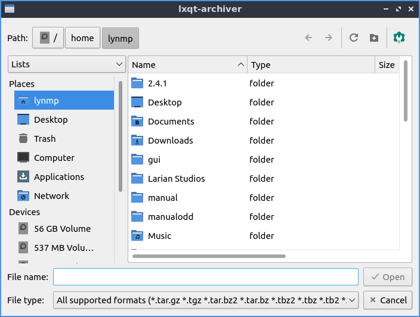
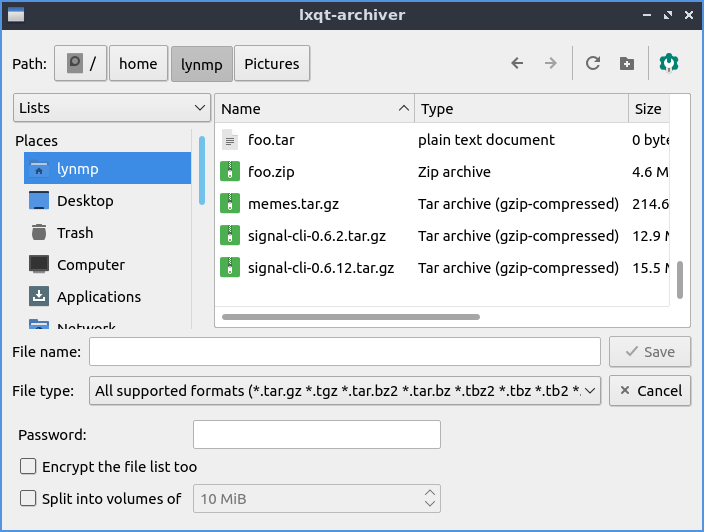
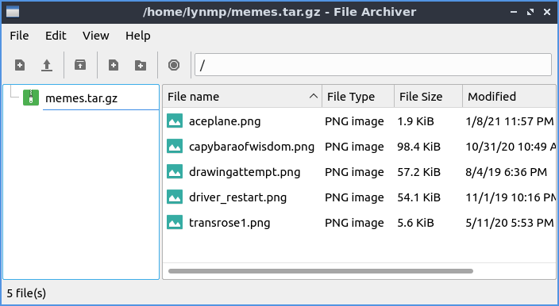

Chapter 2.4.1 LXQt File Archiver¶
LXQt File Archiver is the default program for dealing with archives like tar or zip files in Denios-OS.
Usage¶
To open an archive file or press Control+O. Once you have an archive opened you should see many lists of files under File name. To open a file double click on that file to open it or right click . To switch to a different folder in an archive double click the on the folder under the File name. To extract all of the file to copy them into a folder on your filesystem or press the Extract button which looks like a box with a with an upward pointing arrow. Then a dialog will open to show you where to save the extracted files navigate to thee desired path and press Open. To extract just one file right click on the file and select . To Delete an unwanted file from an archive right click on it and select or select it and press Delete. To view properties of an archive press Alt+ Enter or . To stop lxqt-archiver from doing something press Escape, press the octagonal or stop sign shaped button, or .
To create a new archive press or press Control+N and a dialog to create a file will be created. To choose what to name the file type the name in the File name field. To choose a password for your archive type in the Password field. Then to make the archive press Save. To add a file to the archive or press the piece of paper button with a + on it. To select multiple files hold Control and left click to select multiple files. To select which file to add navigate to it and press the Open button. To add an entire folder of files or press the Folder button with + and select the folder you want and then press Open. To add a password to an existing archive . To show what password you currently have typed check the Show password checkbox. To also have the file list encrypted check the Encrypt the file list too checkbox. To split the archive into multiple different volumes check the Split into volumes of and select the size of volumes in the filed to the right.
To navigate to a folder inside of an archive double click on it in the center of the window or double click on the left side pane. To move back up in a directory double click on the folder ...
To reload the view of the archive press F5 or . To view the whole directory tree press Control+ Shift +Down arrow or . To view just the top level of directory tree press Control + Shift + Up arrow or . To search for files press Control +F or . Type what you want to search for in the textbox at the bottom. To hide searching press Control+F or again.
To toggle showing the toolbar in LXQt File Archiver . To Toggle showing the Statusbar at the bottom . To toggle showing the directory tree on the left .
To close LXQt File Archiver press Control+Q.
Version¶
Denios-OS ships with version 0.6.0 of LXQt File Archiver.
How To Launch¶
To launch LXQt File Archiver or run
lxqt-archiver
from the command line.